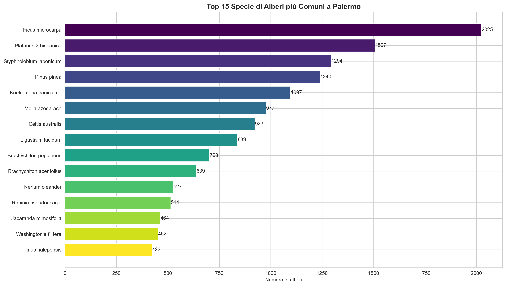
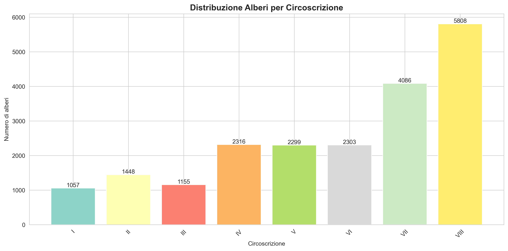
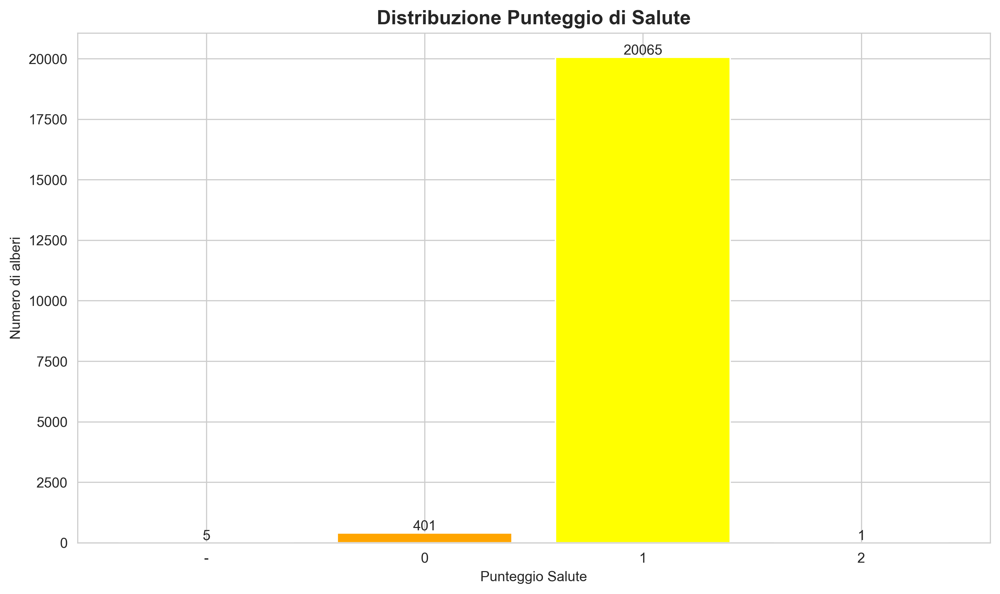
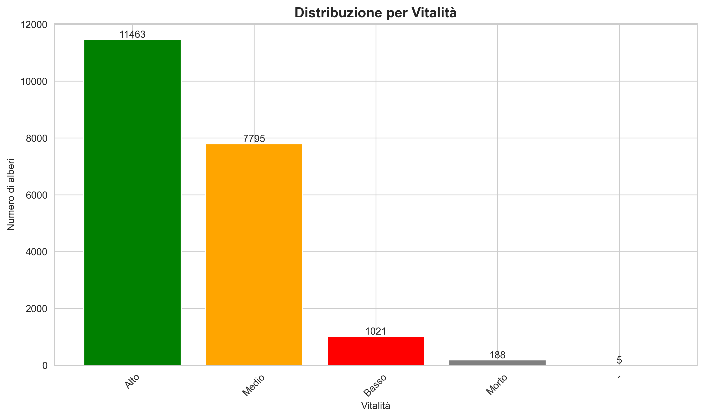
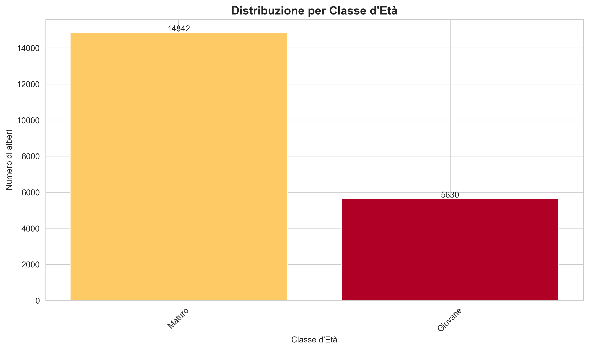
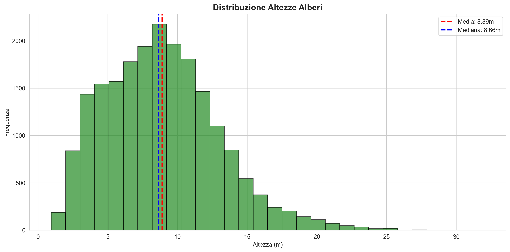
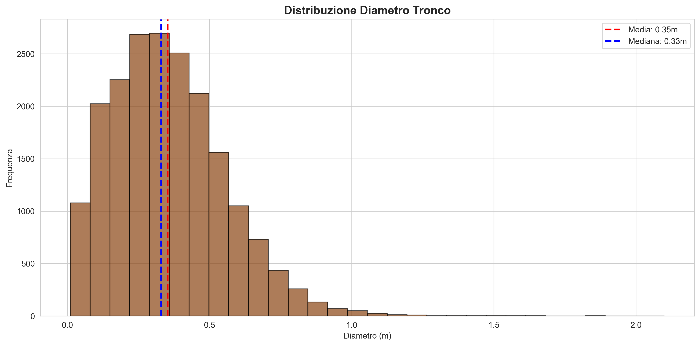

Alberi di Palermo - Dashboard Interattiva su database GreeHill
Esplora il patrimonio arboreo (Rilievo fase 1) della città con filtri dinamici
Filtri di Ricerca
Usa i filtri per esplorare il database degli alberi. Tutti i filtri sono indipendenti: puoi cercare una specie specifica in tutta la città o filtrare per stato di salute per vedere dove si trovano gli alberi che richiedono attenzione.
Mappa dei Quartieri
Visualizzazione geografica dei quartieri di Palermo. La mappa si aggiorna automaticamente in base ai filtri selezionati, evidenziando le circoscrizioni e i quartieri corrispondenti. Passa il mouse sopra un quartiere per vedere il numero di alberi, clicca per selezionarlo.
Statistiche Generali
Panoramica numerica del patrimonio arboreo (Rilievo fase 1). I valori si aggiornano automaticamente in base ai filtri selezionati, permettendoti di analizzare sottoinsiemi specifici del database.
Distribuzione per Stato di Salute
Benefici Ambientali Annuali
I servizi ecosistemici forniti dagli alberi urbani: produzione di ossigeno, sequestro di carbonio, intercettazione delle acque piovane e rimozione degli inquinanti atmosferici. I valori si riferiscono ai contributi annuali stimati per l'insieme degli alberi selezionati.
Impatto Ambientale
Gli alberi (Rilievo fase 1) di Palermo stoccano complessivamente 7,259 tonnellate di carbonio, equivalente alle emissioni annuali di circa 1,570 automobili!
Età degli Alberi
Distribuzione per classe di età del patrimonio arboreo (Rilievo fase 1). Gli alberi maturi forniscono maggiori benefici ambientali, mentre gli alberi giovani rappresentano l'investimento per il futuro del verde urbano.
Specie Presenti (211)
Elenco completo delle specie arboree presenti nella selezione corrente, ordinate per numero di esemplari. La biodiversità urbana è fondamentale per la resilienza dell'ecosistema cittadino.
Visualizzazioni e Grafici
Rappresentazioni grafiche del patrimonio arboreo (Rilievo fase 1) di Palermo. Clicca su un'immagine per ingrandirla. Questi grafici mostrano i dati completi dell'intero database cittadino.
Top 15 Specie più Comuni
Distribuzione per Circoscrizione
Stato di Salute degli Alberi
Vitalità degli Alberi
Distribuzione per Classe d'Età
Distribuzione Altezze
Distribuzione Diametri Tronco
Top 10 Specie per Sequestro Carbonio